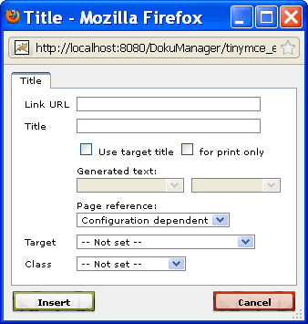

2.3.8.8. Links
Perform following steps to insert an internal or external link:
- Select the text that shall be transformed to a link element.
- Click the "Insert/edit link"
 button. The following dialog pops up:
button. The following dialog pops up:

- Fill in the "Link URL". Four types of links can be distinguished:
- Content link:
A content link references a position within the content. A content link can reference a section- or content-node or a content-element to which an ID is assigned (e.g. an inserted image or table). A content link always starts with a hash character (#) followed by the alias name or ID of the target. For example, to create a link to the section with alias name "introduction", enter the link URL "#introduction": - File link:
A file link references a file-node. The URL of a file link has to start with "file/", followed by the alias name of the file, e.g. "file/my_file". Note that file-links are only supported for HTML-based output formats, but not for print-output. In print-output the link text is rendered as plain text. In HTML-based output, the referenced files are included in exported publications (in the sub-folder "files"). Clicking on a file link opens the file in the same or a new window, depending on the HTML output-configuration (see the "File/external link target window" setting in chapter Section 2.6.2.1.3, “HTML output settings”). - Image link:
An image link is similar to a file link, except that it references an image-node. The URL of an image link has to start with "image/", followed by the alias name of the image, e.g. "image/my_pic". In HTML-based output, the referenced images are included in exported publications (in the sub-folder "images"). - External link:
If the link URL does not start with a hash character (#) or "file/" or "image/", then the URL is an external link. An external link has to be an absolute URL including the protocol and server name (e.g. "http://www.docmenta.org"). The output configuration option "Show external URL" allows to control whether the URL shall be appended to the link text or shown as footnote for print output (see Section 2.6.2, “Output configuration”).
Note that instead of directly entering the external URL, it is possible to store URLs as titles of content-nodes and then enter an inline-inclusion expression in the "Link URL" field. For example, if you have set the text "http://www.docmenta.org" as title of a node with alias name "docmenta_url", then you can enter the text "[#docmenta_url]" as link URL, instead of directly entering "http://www.docmenta.org".
- Content link:
- Select the title options to control the rendering of the link text during publication export:
"Use target title" checkbox
If the "Use target title" box is checked, then the publication export process will automatically replace the text of the link element by the number and/or title of the referenced element. If the output format is print media, then the generated link text can also include the page number of the referenced element. For example, if the second chapter has the title "Introduction" and starts on page 5, then a link which references this chapter will be rendered as "Chapter 2, Introduction (page 5)". The default link text generation can be customized using Gentext templates (see Section 2.3.6, “Gentext configuration”). Furthermore the output configuration option "Include page numbers in references" allows to control whether page numbers are appended to the generated link text (see Section 2.6.2, “Output configuration”). If the default link text generation is not adequat for a reference, then the default link text generation can be influenced by the following listbox settings.
If the "Use target title" box is checked, then the publication export process will automatically replace the text of the link element by the number and/or title of the referenced element. If the output format is print media, then the generated link text can also include the page number of the referenced element. For example, if the second chapter has the title "Introduction" and starts on page 5, then a link which references this chapter will be rendered as "Chapter 2, Introduction (page 5)". The default link text generation can be customized using Gentext templates (see Section 2.3.6, “Gentext configuration”). Furthermore the output configuration option "Include page numbers in references" allows to control whether page numbers are appended to the generated link text (see Section 2.6.2, “Output configuration”). If the default link text generation is not adequat for a reference, then the default link text generation can be influenced by the following listbox settings.
Label listbox
The label listbox can be set to one of the following values
The label listbox can be set to one of the following values
| Value | Example | Description |
|---|---|---|
| Label+number | Figure 3 | The generated link text includes a label name (e.g. Chapter, Figure, Table, ...) and the number of the referenced element. |
| Label | Figure | The generated link text includes the label name (but no number). |
| Number | 3 | The generated link text will only include the number of the referenced element. |
Title listbox
The title listbox can be set to one of the following values:
The title listbox can be set to one of the following values:
| Value | Example | Description |
|---|---|---|
| Title | First steps | Title without quotes. |
| Quoted title | "First steps" | Title in quotes. |
Page listbox
The page listbox allows to control whether the page number of the referenced element shall be included in the generated link text or not. This option will only have an effect for page oriented output formats like PDF. Following options exist:
The page listbox allows to control whether the page number of the referenced element shall be included in the generated link text or not. This option will only have an effect for page oriented output formats like PDF. Following options exist:
| Value | Example | Description |
|---|---|---|
| Configuration dependent | The page number will only be included in the generated link text during export, if the option "Include page numbers in references" was activated in the output configuration (see Section 2.6.2, “Output configuration”). | |
| Page |
Table 3 (page 25)
page 25
|
The page number will be included in the generated link text. If the link text also includes other information like label number and/or title, then the page number will by default be appended in parenthesis. Otherwise the link text will only consist of the page number. |
| No page | The page number will be suppressed even if the inclusion of page numbers was configured in the output configuration. |
If no value is selected in the label and title listboxes and the page listbox is set to "Configuration dependent", then the default link text generation will be used.
If the "Use target title" box is checked and the link URL is an external link, then the link text will be replaced by the link URL. In this case the label, title and page listboxes will have no effect.
"for print only" checkbox
Check the "for print only" box, if you want to supply a different link text for print-output (e.g PDF) than for interactive output (e.g. HTML). Enter the link text to be used for print-output in the input field above. The link text can also be an inline inclusion element (see "Inline inclusions" in the tutorial). For example, this can be used to create bibliographic entries.
Check the "for print only" box, if you want to supply a different link text for print-output (e.g PDF) than for interactive output (e.g. HTML). Enter the link text to be used for print-output in the input field above. The link text can also be an inline inclusion element (see "Inline inclusions" in the tutorial). For example, this can be used to create bibliographic entries.
If both, the "for print only" box and the "Use target title" box are checked, then the link text will be replaced by the title of the referenced element only when a publication for print-output (e.g. PDF) is exported. For example, for interactive output formats it is often sufficient to use a general link text like "see here", whereas the link text for print output should include the referenced section number and section title.
- Click the "Insert" button to create the link.
To edit a link, place the cursor on the link element and click the "Insert/edit link" button.
See also:
- See "Linking content" in the tutorial for an introduction on how to use links and how to use the Quick-Links feature for a faster creation of links.
- The formatting of internal and external links is defined by the styles "link" and "link_external". See Section 2.4.2, “Pre-defined styles” for more information.
- The default behaviour for including page numbers and URLs in the generated link text can be configured by output options as described in Section 2.6.2, “Output configuration”.
- The default link text generation can be customized using Gentext templates (see Section 2.3.6, “Gentext configuration”).
Unlink
If a text which is currently marked as a link element shall no longer be rendered as a link, then proceed as follows:
- Place the cursor on the link element.
- Click the "Unklink" button.